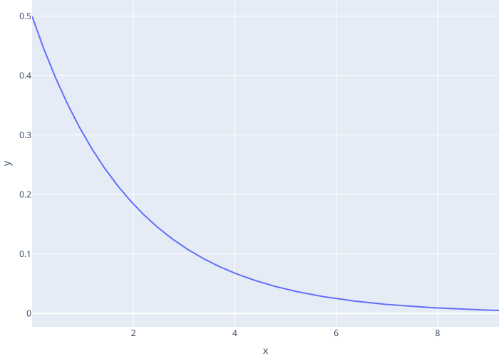
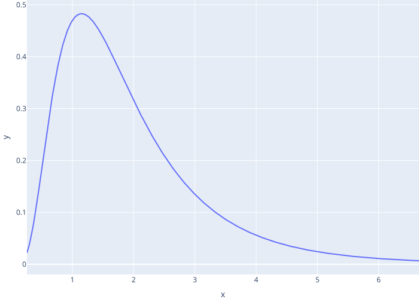

Probabilistic Distributions
Terms defined: exponential random distribution, log-normal random distribution, median
Uniform Rates
- Use ranges for creation times and job durations
RNG_SEED = 98765
T_CREATE = (6, 10)
T_JOB = (8, 12)
T_SIM = 20
Jobhas a random duration
class Job:
def __init__(self):
self.id = next(Job._next_id)
self.duration = random.uniform(*T_JOB)
managerwaits a random time before creating the next job- Format time to two decimal places for readability
def manager(env, queue):
while True:
job = Job()
print(f"manager creates {job} at {env.now:.2f}")
yield queue.put(job)
yield env.timeout(random.uniform(*T_CREATE))
- Always initialize the random number generator to ensure reproducibility
- Hard to debug if the program behaves differently each time we run it
if __name__ == "__main__":
random.seed(RNG_SEED)
# …as before…
manager creates job-0 at 0.00
manager creates job-1 at 8.36
manager creates job-2 at 14.73
coder waits at 0.00
coder gets job-0 at 0.00
coder waits at 8.52
coder gets job-1 at 8.52
Better Random Distributions
- Assume probability of manager generating a new job in any instant is fixed
- I.e., doesn't depend on how long since the last job was generated
- If the arrival rate (jobs per tick) is λ, the time until the next job is an exponential random variable with mean 1/λ

- Use a log-normal random variable to model job lengths
- All job lengths are positive
- Most jobs are short but there are a few outliers
- If parameters are μ and σ, the median is eμ

Better Random Interaction
- Parameters and randomization functions
…other parameters as before…
T_JOB_INTERVAL = 2.0
T_JOB_MEAN = 0.5
T_JOB_STD = 0.6
def rand_job_arrival():
return random.expovariate(1.0 / T_JOB_INTERVAL)
def rand_job_duration():
return random.lognormvariate(T_JOB_MEAN, T_JOB_STD)
- Corresponding changes to
Jobandmanager
class Job:
def __init__(self):
self.id = next(Job._next_id)
self.duration = rand_job_duration()
def manager(env, queue):
while True:
job = Job()
t_delay = rand_job_arrival()
print(f"manager creates {job} at {env.now:.2f} waits for {t_delay:.2f}")
yield queue.put(job)
yield env.timeout(t_delay)
- Results
manager creates job-0 at 0.00 waits for 7.96
manager creates job-1 at 7.96 waits for 0.60
manager creates job-2 at 8.56 waits for 3.70
coder waits at 0.00
coder gets job-0 at 0.00
coder waits at 0.65
coder gets job-1 at 7.96
coder waits at 8.75
coder gets job-2 at 8.75
- But this is still hard to read and analyze